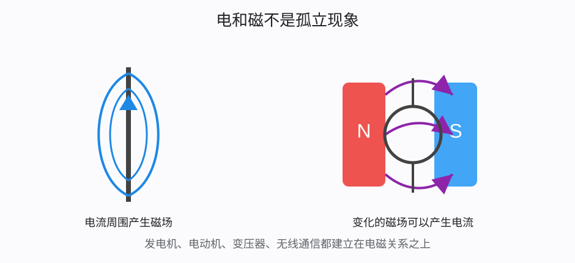

理解电必须掌握的物理基础
一、为什么学习电之前要先补物理基础
电学中有很多词看起来熟悉，但真正理解并不容易：
- 电荷。
- 电场。
- 电势。
- 电压。
- 电流。
- 电阻。
- 电功率。
- 磁场。
- 电磁感应。
如果直接背公式，会觉得这些概念彼此分散。但从物理逻辑看，它们有清晰的关系：
电荷是根源
↓
电荷产生电场
↓
电场让电荷受力
↓
电势差推动电荷运动
↓
电荷定向运动形成电流
↓
电流通过电阻会消耗能量
↓
电流还能产生磁场
↓
变化的磁场又能产生电
这篇文章的目标是把这些基础概念串起来。
二、电荷：电现象的根源
电荷（Electric Charge）是物质的一种基本属性。
就像质量让物体参与引力作用，电荷让粒子参与电磁相互作用。
电荷有两种：
- 正电荷。
- 负电荷。
基本规律：
同种电荷相互排斥
异种电荷相互吸引

2.1 电荷从哪里来
普通物质由原子组成。原子内部有：
- 原子核：带正电。
- 电子：带负电。
正常情况下，一个物体中正电荷总量和负电荷总量大致相等，所以整体不显电性。
当电子发生转移时，物体就可能带电：
失去电子 -> 正电荷相对更多 -> 带正电
得到电子 -> 负电荷相对更多 -> 带负电
摩擦起电的本质通常就是电子转移。
2.2 电荷守恒
电荷不能凭空产生或消失，只能从一个物体转移到另一个物体，或者以正负成对形式出现。
这就是电荷守恒：
在一个孤立系统中，电荷总量保持不变。
例如毛皮摩擦橡胶棒：
- 橡胶棒得到电子，带负电。
- 毛皮失去电子，带正电。
- 总电荷仍然守恒。
三、电场：电荷如何隔空影响其他电荷
一个带电物体可以在不接触另一个带电物体的情况下产生作用力。为了描述这种“隔空影响”，物理学引入电场。
电场可以理解为：
电荷在周围空间建立的一种影响状态。另一个电荷进入这个空间后，会受到电场力。
3.1 为什么需要电场这个概念
如果没有电场，我们只能说：
电荷 A 隔着一段距离直接拉动或推动电荷 B。
这会让人困惑：力是怎么穿过空间传过去的？
引入电场后，描述变成：
电荷 A 改变周围空间，形成电场
↓
电荷 B 位于这个电场中
↓
电荷 B 受到电场力
这种表达更适合描述复杂电磁现象。
3.2 电场方向
物理学规定：
电场方向是正电荷在该点受力的方向。
所以：
- 正电荷产生的电场向外发散。
- 负电荷产生的电场向内汇聚。
如果放入一个负电荷，它受力方向会和电场方向相反。
3.3 电场强度
电场强度表示电场“有多强”。
公式是：
E = F / q
含义是：
E：电场强度。F：电场对电荷的力。q：被放入电场中的电荷量。
通俗理解：
电场强度表示单位电荷放在这里会受到多大的力。
四、电势和电压：为什么电荷会流动
只说电场还不够。要理解电路，必须理解电势和电压。
4.1 电势是什么
电势可以粗略类比成“电学中的高度”。
在重力场中：
- 高处的物体有较高的重力势能。
- 物体会倾向于从高处向低处运动。
在电场中：
- 电荷在不同位置有不同电势能。
- 电势描述单位电荷在某处具有多少电势能。

4.2 电压是什么
电压（Voltage）是两点之间的电势差。
电压 = 两点之间的电势差
如果说电势像高度，那么电压就像高度差。
有高度差，水才倾向于流动；有电势差，电荷才有定向运动的动力。
所以通俗说：
电压不是“电流本身”，而是推动电荷运动的原因。
4.3 为什么没有电压就没有持续电流
导线中有大量自由电子，但如果没有电势差，它们只是杂乱无章地热运动，不会形成整体方向一致的电流。
电源的作用就是维持两端电势差，让电荷持续受到推动。
没有电压：电子杂乱运动，宏观上没有电流
有电压：电子出现定向漂移，形成电流
五、电流：电荷的定向运动
电流（Electric Current）表示单位时间内通过某个截面的电荷量。
公式是：
I = Q / t
含义是：
I：电流。Q：通过截面的电荷量。t：时间。
通俗理解：
电流就是电荷流动的“流量”。
5.1 电流方向和电子方向为什么相反
物理学早期规定电流方向是正电荷运动方向。
在金属导线中，真正大量移动的是电子，而电子带负电，所以：
约定电流方向：从电源正极到负极
电子漂移方向：从电源负极到正极
这不是矛盾，而是历史约定和微观机制不同。
5.2 电流需要闭合回路
持续电流需要闭合路径。

一个最简单电路包括：
- 电源：维持电压。
- 导线：提供通路。
- 负载：消耗电能，例如灯泡、电机、电阻。
如果电路断开，电荷无法形成持续定向运动，电流就中断。
六、电阻：为什么电流会受到阻碍
电阻（Resistance）表示材料阻碍电流通过的能力。
金属中电子移动时，会受到晶格、杂质、热振动等影响，不能完全自由地运动。
电阻越大，在相同电压下电流越小。
欧姆定律：
U = I · R
含义是：
U：电压。I：电流。R：电阻。
也可以写成：
I = U / R
直觉是：
推动力越大，流动越强
阻碍越大，流动越弱
6.1 欧姆定律的适用范围
欧姆定律不是所有情况下都严格成立。它适用于很多金属导体在温度稳定、材料性质不剧烈变化时的情况。
例如二极管、晶体管、气体放电、复杂半导体器件就不能简单用固定电阻解释。
七、电功率和电能：电如何做功
电功率表示电能转化的快慢。
公式：
P = U · I
含义：
P：功率，单位瓦特 W。U：电压。I：电流。
如果电压越高、电流越大，单位时间内转化的能量就越多。
电能公式：
W = P · t
这就是电费中“度”的来源：
1 度电 = 1 千瓦时 = 1 kW · h
7.1 为什么电器会发热
电流通过电阻时，电荷和材料内部粒子相互作用，把电能转化为热能。
焦耳热公式：
Q = I^2 · R · t
这解释了：
- 电热水壶为什么能加热。
- 电炉丝为什么会发红。
- 电线过载为什么危险。
- 芯片工作时为什么会发热。
八、电容：储存电荷和电场能量
电容器由两个导体极板和中间绝缘介质组成。
它的基本功能是储存电荷。
当电容两端接上电压时：
- 一个极板积累正电荷。
- 另一个极板积累负电荷。
- 两极板之间形成电场。
电容的作用包括：
- 平滑电压波动。
- 储能。
- 滤波。
- 隔直流、通交流。
- 构成振荡电路。
通俗理解：
电容像一个可以短时间存放电荷的“弹性水箱”。
九、电感：电流变化时的惯性
电感通常由线圈构成。
当电流通过线圈时，会产生磁场。电流变化时，磁场也变化，而变化的磁场会反过来产生感应电动势，阻碍电流变化。
所以电感的核心特性是：
电感不喜欢电流突然变化。
这类似机械中的惯性：
- 物体不喜欢速度突然变化。
- 电感不喜欢电流突然变化。
电感常用于：
- 滤波。
- 储能。
- 变压器。
- 电机。
- 开关电源。
十、磁场：电流和磁之间的关系
磁场不是只和磁铁有关。电流也会产生磁场。

奥斯特实验说明：
通电导线周围会产生磁场。
这意味着：
电荷运动
↓
形成电流
↓
产生磁场
10.1 电磁铁
如果把导线绕成线圈并通电，线圈产生的磁场会增强。
加入铁芯后，磁场更强。
这就是电磁铁。
电磁铁的优势是：
- 通电有磁性。
- 断电磁性大幅减弱。
- 改变电流大小可以改变磁力大小。
- 改变电流方向可以改变磁极方向。
十一、电磁感应：磁如何产生电
法拉第发现：
当穿过闭合回路的磁场发生变化时，回路中会产生感应电动势；如果回路闭合，就会产生感应电流。
这就是电磁感应。
发电机的基本逻辑：
外力让线圈在磁场中转动
↓
穿过线圈的磁场不断变化
↓
线圈中产生感应电动势
↓
形成电流
所以发电机并不是“凭空创造电能”，而是把机械能转化为电能。
十二、直流电和交流电
12.1 直流电
直流电（Direct Current，DC）的方向基本不变。
常见来源：
- 电池。
- 充电宝。
- 太阳能电池板。
- 电子电路中的供电。
12.2 交流电
交流电（Alternating Current，AC）的大小和方向随时间周期性变化。
家庭插座通常是交流电。
交流电适合大规模电力传输的原因之一是：
- 可以方便地通过变压器升压和降压。
- 高压传输可以减少线路损耗。
- 到用户侧再降压提高安全性。
十三、导体、绝缘体和半导体
13.1 导体
导体中有容易移动的自由电荷。
常见导体：
- 铜。
- 铝。
- 银。
- 铁。
导体适合传输电流。
13.2 绝缘体
绝缘体中的电荷不容易自由移动。
常见绝缘体：
- 橡胶。
- 塑料。
- 陶瓷。
- 干燥空气。
绝缘体用于隔离和保护。
13.3 半导体
半导体的导电能力介于导体和绝缘体之间，并且可以通过掺杂、电压、光照、温度等方式控制。
常见半导体材料：
- 硅。
- 锗。
- 砷化镓。
现代电子工业的核心就是半导体。
晶体管能像开关一样控制电流，许多晶体管组合起来就能构成逻辑门、存储器和 CPU。
十四、这些概念之间的整体关系
电荷
↓ 产生
电场
↓ 不同位置形成
电势差 / 电压
↓ 推动可移动电荷
电流
↓ 经过材料时受到
电阻
↓ 转化能量
电功率 / 热 / 光 / 机械能
再从电磁角度看：
电流
↓ 产生
磁场
↓ 变化时
感应电动势
↓ 闭合回路中
感应电流
这两条线合起来，就是理解电学的基础骨架。
十五、核心术语速查表
| 中文术语 | 英文术语 | 含义 |
|---|---|---|
| 电荷 | Electric Charge | 参与电磁相互作用的基本属性 |
| 电荷守恒 | Conservation of Charge | 孤立系统中总电荷不变 |
| 电场 | Electric Field | 电荷周围使其他电荷受力的空间状态 |
| 电场强度 | Electric Field Strength | 单位电荷受到的电场力 |
| 电势 | Electric Potential | 单位电荷在某点具有的电势能 |
| 电压 | Voltage | 两点之间的电势差 |
| 电流 | Electric Current | 电荷的定向运动 |
| 电阻 | Resistance | 阻碍电流通过的性质 |
| 欧姆定律 | Ohm's Law | 电压、电流、电阻之间的关系 |
| 电功率 | Electric Power | 电能转化的快慢 |
| 电容 | Capacitance | 储存电荷和电场能量的能力 |
| 电感 | Inductance | 阻碍电流变化的性质 |
| 磁场 | Magnetic Field | 磁体或电流周围产生的场 |
| 电磁感应 | Electromagnetic Induction | 变化磁场产生电动势的现象 |
| 直流电 | Direct Current, DC | 方向基本不变的电流 |
| 交流电 | Alternating Current, AC | 方向和大小周期性变化的电流 |
| 导体 | Conductor | 容易导电的材料 |
| 绝缘体 | Insulator | 不容易导电的材料 |
| 半导体 | Semiconductor | 导电能力可被控制的材料 |
十六、总结
理解电学，最重要的是不要把概念割裂开。
电荷是起点。电荷产生电场，电场带来力和能量分布。电势差推动电荷运动，形成电流。电流通过不同材料时会受到阻碍并发生能量转化。电流还能产生磁场，变化的磁场又能产生电。
所以电学不是一堆公式，而是一条连续的物理逻辑：
电荷 -> 电场 -> 电势差 -> 电流 -> 能量转化 -> 电磁关系
掌握这条线后，再学习电路、电子元件、电力系统、通信、计算机硬件和现代电子技术，都会更容易理解。